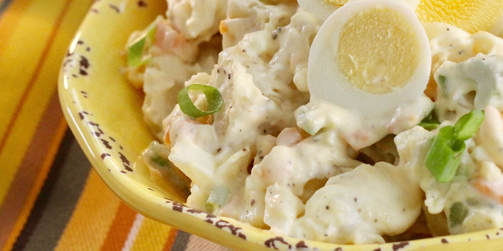
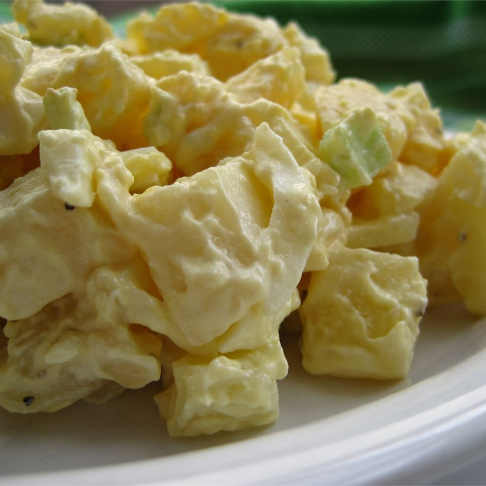
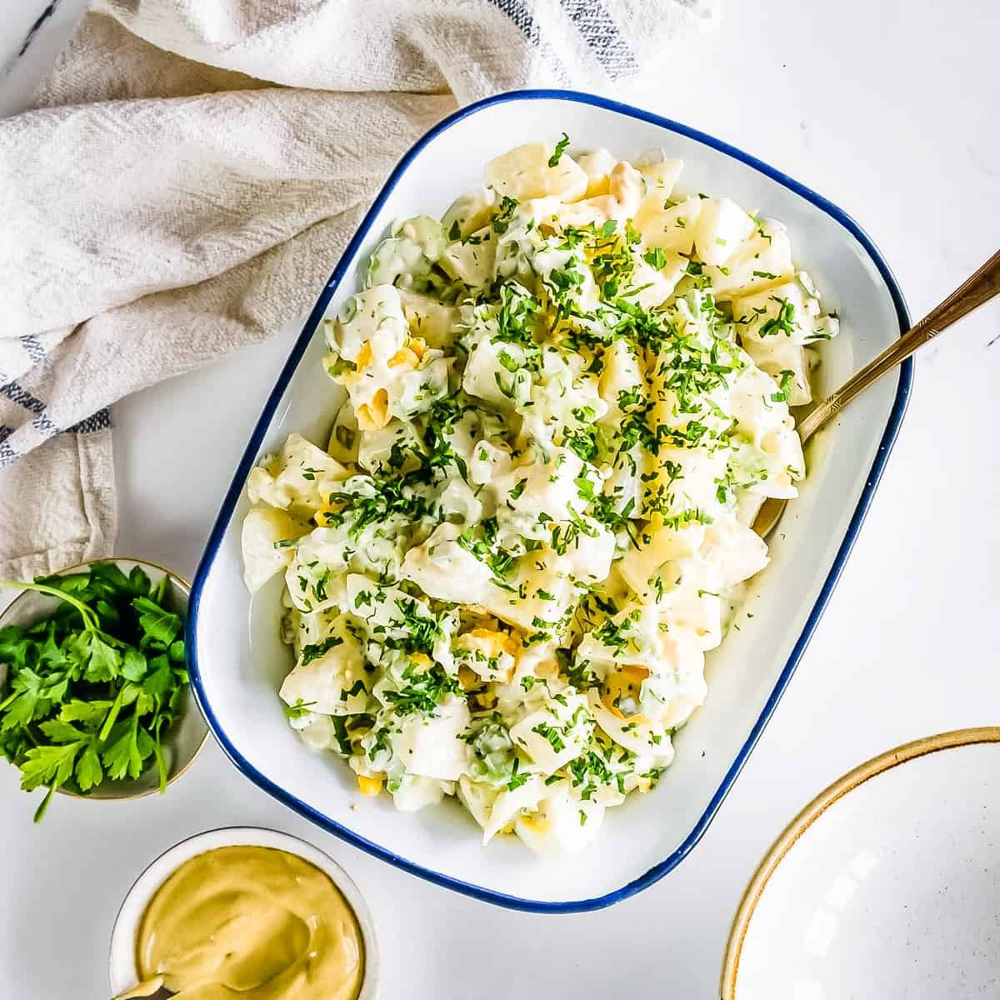
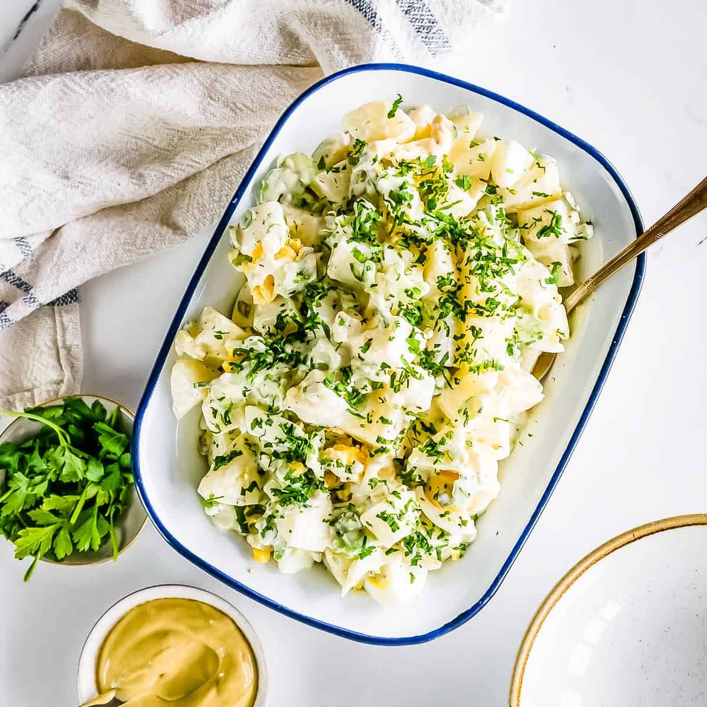
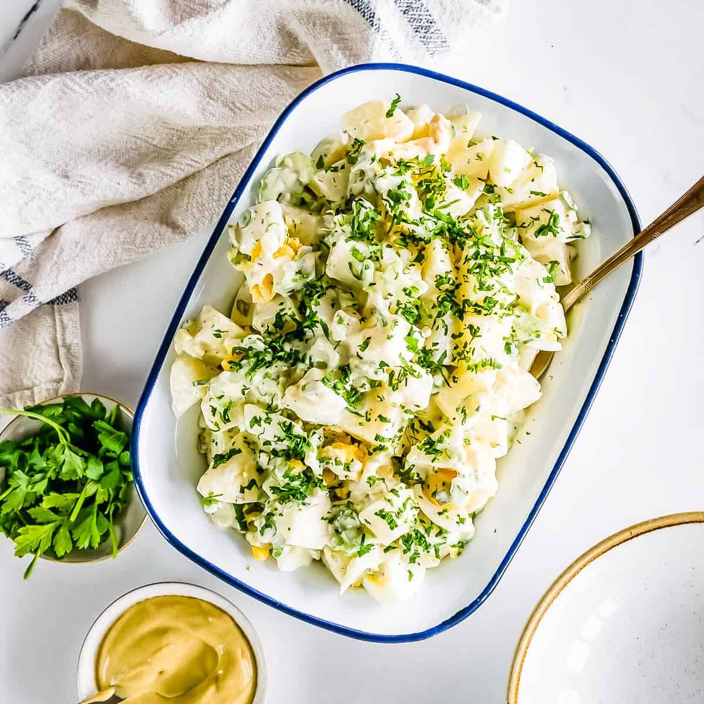
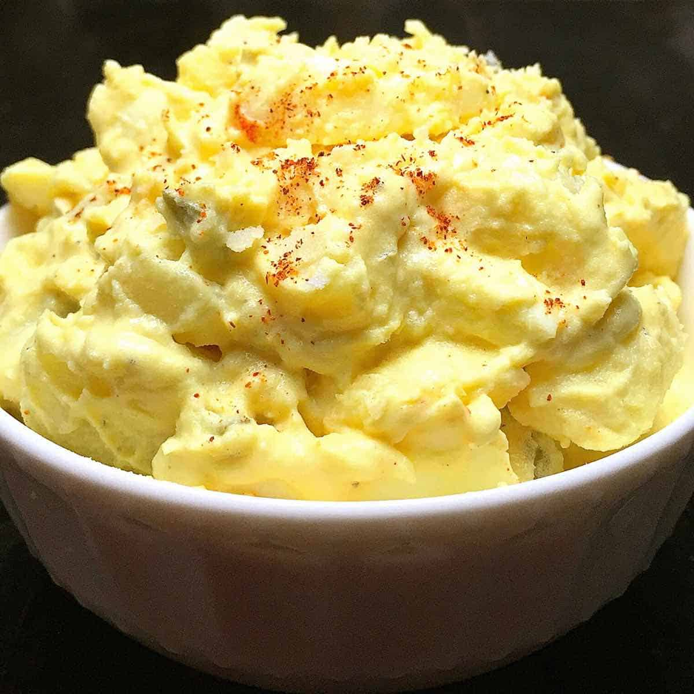
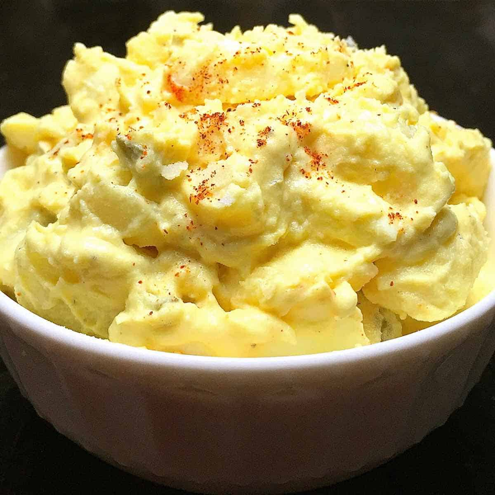

Description
Just a good old fashioned, down home potato salad recipe that brings back memories of picnics in the park and family gatherings. Wonderful as it is or make it your own by adding additional ingredients of your choice.


 



 
